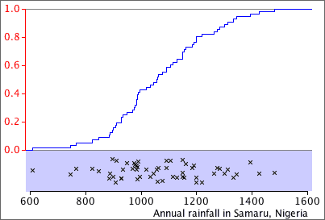

Cumulative distribution function
The cumulative proportion of values less than or equal to x can be found for any x. They can be shown together in a single graph of the cumulative proportion against x. This is called the cumulative distribution function of the variable.

The cumulative distribution function for a data set with n values is a step function that rises from 0.0 below the minimum x-value to 1.0 at the maximum x in the data. It increases by 1/n at each value in the data set.